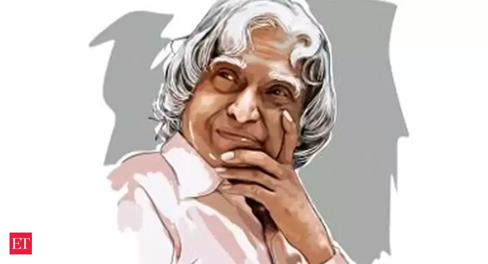

The Missile-Man,
Dr. A.P.J.Abdul Kalam
(1931-2015)
Avul Pakir Jainulabdeen Abdul Kalam , Indian scientist and honorable 11th president (2002-2007) of India
stepped to this world on october 15,1931. He played a leading role in devoloping missile and
nuclear weapon projects, which rewarded him with a nickname The Missile Man
Timeline
- 1954:Graduated in physics from st joseph college, Tiruchirappalli.
- 1958: Failed after applying for his dream- pilot in DRDO
- 1960:Gained degree in Aeronautical Engineering from Madras Institute of Technology.
- 1969: Transferred to ISRO from the DRDO.
- 1980: India enters the space club by putting the Rohini satellite in the near earth orbit with the first indigenous Satellite Launch Vehicle (SLV-III), developed under the stewardship of Dr. Kalam.
- 1982:Kalam planned the program that produced a number of successful missiles, which earned him the nickname Missile Man
- 1992-1999: works as Chief Scientific Advisor to the PM and Secretary of the DRDO.
- 1998: India conducts the Pokhran II nuclear tests in May with Dr. Kalam as the chief project coordinator.
- 1999-2001: Principal Scientific Advisor to the Government of India.
- 2002-2007: President of India.
His Books and Vision
The People's President also had a blessed talent of writing books, which made him more admiring and inspiring.
- India 2020: A Vision for the New Millennium
- Wings of Fire: An Autobiography
- Ignited Minds: Unleashing the Power within India
- The Luminous Sparks: A Biography in Verse and Colours
- Guiding Souls: Dialogues on the Purpose of Life
- Mission of India: A Vision of Indian Youth
For more Books Click Here
Honours
- 1997-Bharat Ratna
- 1981-Padma Bhushan
- 1990-Padam Vibushan
- 2009-hoover medal
- 1997-Indira Gandhi Award for national integration
- 1998-Veer Savarkar Award
- 2007-King Charles II Award
- 2011-IEEE Honorary Award
- 2000-Ramanujan Award
Something more precious than his Awards, his birthday is declared as World students' day by The United Nations. Switzerland declared May 26 as Science day as a memory of kalam's visit to switzerland .
The Humble people's president stepped out of this world on July 27, 2015 after collapsing during a lecture at the Indian Institute of Management in Shillong.
For complete description about the great man,Click Here and get inspired. Let Us Make His Dream A Reality.